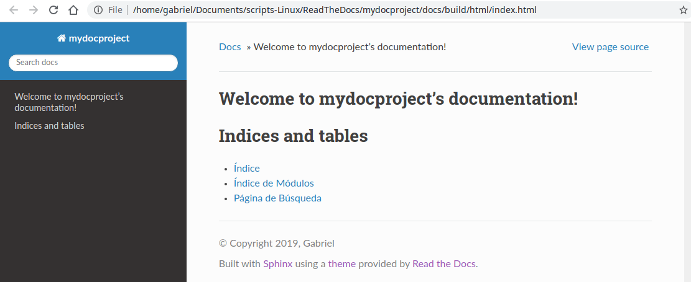

Usando el tema RTD localmente¶
Para usar el tema de Read the Docs de forma local debemos seguir los pasos descritos en cualquiera de los siguientes dos enlaces:
- Habiendo instalado
sphinx-rtd-theme, agregar al archivodocs/source/conf.pyla extensiónsphinx_rtd_theme:
import sphinx_rtd_theme
extensions = [
...
"sphinx_rtd_theme",
]
html_theme = "sphinx_rtd_theme"
- Desde el directorio
docs/actualizar los archivos html:
make html
- Abrir la página
index.htmlpara comprobar que se haya actualizado el tema localmente:

Tema de Read the Docs locamente